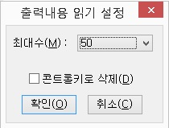

Ⅶ-4. 도구
Ⅶ-4-1. 소리 및 문자열 설정
포커스된 객체나 센스리더의 특정 기능에 소리나 문자열을 지정할 수 있는 기능입니다.
소리 및 문자열 설정은 다음 두 가지 트리뷰 항목으로 구성됩니다.
1. 포커스
현재 포커스된 객체의 종류를 소리나 문자열을 통해 사용자에게 알려줍니다. 확장할 수 있는 항목은 소리와 문자열 모두 가능합니다.
설정 방법은 트리뷰에서 원하는 객체를 선택한 뒤 <Popup>키를 눌러 [사운드 설정]이나 [문자열 설정]을 선택해 주면 됩니다.
1) 문자열 설정
문자열 편집창에 컨트롤의 이름을 사용자가 변경하기 원하는 이름으로 입력합니다. 컨트롤의 이름을 앞 혹은 뒤에 읽을 것인지 라디오버튼으로 선택합니다.
2) 사운드 설정
'파일 이름 콤보 편집창'에서 위, 아래 방향키를 이용하여 기본 사운드를 선택할 수 있으며, '찾아보기' 버튼을 눌러 사용자가 원하는 소리파일을 지정할 수 있습니다.
'사용' 체크상자가 해제되어 있으면 소리파일이 지정되어 있더라도 사운드 출력을 하지 않으며, '미리 듣기' 버튼을 이용하여 현재 선택한 사운드를 미리 들어볼 수 있습니다.
2. 일반
일반은 센스리더의 시작과 종료, 자동 시간알림, 사용자 인증 성공, 가상 커서 페이지 열림, 가상 커서 사용 선택, 가상 커서 사용 해제 및 알림음 등으로 구성됩니다. 일반에 속한 항목은 소리만 설정 가능하며, 웨이브 파일(*.wav)을 지정할 수 있습니다.
일반 항목의 사운드 변경하기
① 센스리더의 [도구] -> [소리 및 문자열 설정] 메뉴를 실행합니다.
② 트리뷰에서 '일반' 항목을 찾아 오른쪽 방향키를 이용해 세부항목을 확장합니다.
③ 프로그램 시작, 사용자 인증 성공 등의 변경할 항목을 찾아 <Popup>키를 눌러 메뉴를 연 다음 사운드 설정에서 <Enter>키를 누릅니다.
④ '파일 이름 콤보 편집창'에서 위, 아래 방향키를 이용하여 기본 사운드를 선택할 수 있으며, '찾아보기' 버튼을 눌러 사용자가 원하는 소리파일을 지정할 수 있습니다.
⑤ '미리듣기' 버튼을 누르면 사운드 설정 완료 이전에 소리파일을 들어볼 수 있습니다.
⑥ '사용' 체크상자를 선택합니다.
⑦ '확인' 버튼을 눌러 설정을 적용합니다.
⑧ 다시 '확인' 버튼을 눌러 대화상자를 닫습니다.
Ⅶ-4-2. 출력내용 읽기 설정
출력내용 읽기(F12) 기능의 세부사항을 설정합니다. 센스리더의 도구메뉴에서 출력내용 읽기 설정을 실행하여 대화상자가 열리면, 출력할 문자열의 최대수와 컨트롤 키로 삭제할 것인지 여부를 선택합니다.

1. 최대수
출력내용에 표시할 문자열의 최대 갯수를 지정합니다. 설정 가능한 값은 1부터 50까지입니다.
2. 컨트롤 키로 삭제
센스리더 사용중 <Ctrl> 키를 눌러 음성출력을 정지한 경우 이전까지의 출력내용을 지울 것인가 여부를 선택합니다.
Ⅶ-4-3. 출력내용 보기 설정
출력내용 보기 설정은 현재 출력되고 있는 음성 정보를 텍스트로 화면 하단에 실시간으로 표시해주는 기능입니다.
하여 출력내용 보기를 선택하여 정안인과의 공동 작업을 더욱 효율적으로 진행할 수 있으며, 별도의 단축키는 제공되지 않습니다.
설정하기
① 출력내용 보기 설정 대화상자가 나타나면 '해제 출력내용 보기 체크상자'에 포커스가 되며, '스페이스바'를 눌러 '선택 출력내용 보기 체크상자'로 변경 합니다.
② 탭키를 눌러 '글자색 콤보상자'로 이동하여 원하는 색상으로 변경 합니다.
콤보상자는 'Alt'키를 누른 상태로 아래방향키를 눌러 활성화한 후 'Alt'키에서 손을 땐 상태로 아래방향키로 이동하여 원하는 색에서 엔터키를 누르면 됩니다.
③ 탭키를 눌러 '배경색 콤보상자'에서 글자색과 동일한 방법으로 색상을 변경 합니다.
※ 다만 글자색과 배경색을 동일하게 하거나 대비에 맞지 않는 색으로 조정할 경우 정안인이 육안으로 확인하는데 어려움이 있을 수 있습니다.
④ 탭키를 눌러 '방향 콤보상자'에서 왼쪽, 가운데, 오른쪽 중 원하는 방향으로 지정합니다.
텍스트는 화면 멘 하단에 나타나며, 정안인의 위치에 따라 사용자가 변경할 수 있습니다.
⑤ 탭키를 눌러 '확인 버튼'에서 엔터를 누르면 설정이 완료 됩니다.
만약 설정을 해제하고자 하는 경우 ①번 과정에서 체크상자를 해제한 후 '확인 버튼'을 누르면 설정이 해제 됩니다.
Ⅶ-4-4. 구두점 읽기 목록
구두점 읽기 선택 기능에서 사용할 구두점 읽기 방법을 관리하는 기능입니다.
기본적으로 '읽지않기', '모두 읽기', '문장부호읽기', '수학기호읽기', '문장+수학기호읽기' 등의 다섯 가지 방법이 등록되어 있으며, 사용자의 취향에 맞는 구두점 읽기 방법을 추가하거나 변경, 삭제할 수 있습니다.
구두점 읽기 목록 추가하기
① [도구] -> [구두점 읽기 목록] 메뉴를 선택합니다.
② 목록에서 <Popup>키를 눌러 '추가' 메뉴를 실행합니다.
③ 구성대화상자가 출력되면, 읽기 원하는 구두점에 스페이스바를 이용하여 선택을 합니다.
④ '이름' 편집창에 추가한 항목 이름을 입력합니다. (예: 사칙연산 읽기, 문장부호 읽기 등)
⑤ '확인' 버튼을 눌러 목록 추가를 마칩니다.
⑥ 목록 대화상자에서 다시 '확인' 버튼을 눌러 대화상자를 닫습니다.
참고사항
1. 이 기능에서 추가한 구두점 읽기 목록은 구두점 읽기 설정 기능에서 추가한 항목을 선택해 주어야 음성출력이 됩니다.
2. 삭제와 변경은 구두점 읽기 목록에서 <Popup>키를 눌러 '삭제'과 '변경' 메뉴를 선택하여 설정할 수 있습니다.
Ⅶ-4-5. 사용자 한자 사전 설정
센스리더는 약 2만자의 기본 한자 사전과 사용자 한자 사전 설정 기능을 제공합니다.
기본 한자 사전은 센스리더가 내부적으로 가지고 있는 한자 테이블이며, 기본 한자 사전에 등록된 한자의 음과 훈을 변경하거나 추가를 원할 때 사용자들은 사용자 한자 사전 설정 기능을 이용해 원하는 작업을 할 수 있습니다.
동일한 한자가 기본 한자 사전과 사용자 한자 사전에 모두 등록되어 있다면 사용자 한자 사전의 데이터를 먼저 적용하게 됩니다.
사용자 한자 사전 추가
① 센스리더의 [도구] -> [사용자 한자 사전 설정] 메뉴를 실행합니다.
② '사용자 한자 사전 설정' 대화상자의 목록에서 <Popup>키를 눌러 '추가' 항목을 선택합니다.
③ '문자' 편집창에 한자를 입력합니다.
④ '음' 편집창에 한자의 음을 입력합니다.
⑤ '훈' 편집창에 한자의 음과 훈을 모두 입력합니다. 이곳에 음과 훈을 모두 입력한다는 것에 주의해야 합니다.
⑥ '확인' 버튼을 눌러 한자 사전 목록으로 돌아갑니다.
⑦ 다시 '확인' 버튼을 눌러 대화상자를 닫습니다.
2. 한자 목록 찾기
한자 목록에서 원하는 한자를 빨리 찾고자 한다면 <Ctrl-F>키를 눌러 찾기기능을 실행합니다. 찾을 문자열은 한자를 직접 입력하거나 한자의 훈을 입력해도 됩니다. 다시 찾기는 <F3>이며, 역방향으로 다시 찾기는 <Shift-F3> 입니다.
검색을 원하는 한자가 목록에서 발견된 경우 해당 목록으로 포커스가 되며, 발견하지 못했을 경우에는 비프음을 출력합니다.
Ⅶ-4-6. 특수 문자 사전 설정
특수문자란 한자를 제외한 키보드로 입력할 수 없는 문자들을 의미하며, <±, ×, ÷, ※, ℓ, №, ℡, Ω> 등과 같은 문자들이 특수문자 범주에 속합니다. 특수문자나 한자들은 음성 엔진에서 처리하지 못하므로 화면읽기 프로그램이 별도의 기능으로 제공을 해야만 합니다.
센스리더에서는 약 3600여개의 특수문자 테이블을 기본적으로 제공하며, 사용자는 필요에 따라 특수문자 사전 설정 기능을 통해 특수문자를 추가/변경/삭제할 수 있습니다. 센스리더에서 기본 제공되는 특수문자 테이블과 사용자가 정의한 특수문자 테이블은 별도의 환경 파일로 관리되며, 일반 사용자의 경우 센스리더에서 제공되는 특수문자 테이블은 수정이 불가능합니다. 만일, 같은 특수문자가 중복해서 정의됐을 경우 사용자가 지정한 설정이 우선순위를 갖게 됩니다.
1. 특수 문자 목록
사용자는 특수문자 목록에서 <Popup>키를 눌러 [추가/변경/제거] 작업을 수행할 수 있습니다.
사용자가 지정한 특수문자가 없다면 목록은 빈 상태로 출력됩니다.
{{2. 특수 문자 추가}}
특수문자 사전 목록에서 팝업키를 눌러 추가에서 <Enter>를 입력합니다.
대화상자는 특수문자의 값, 내용, 풀어읽기 등으로 구분됩니다.
1. 값 : 값은 특수문자 코드이며 실제로 화면에 보이는 글자입니다.
2. 내용 : 특수문자를 읽을 때 음성출력하는 문자열을 의미합니다.
3. 풀어읽기 : 풀어읽기 기능 (현재글자읽기를 두 번눌렀을 때)등에서 읽어주는 문자열을 의미합니다.
* 내용에는 간단히 문자열을 입력하고, 풀어읽기에 자세한 설명을 붙이도록 합니다.
3. 특수문자 찾기
특수문자 목록에서는 편집기와 비슷하게 <찾기> 기능을 지원합니다. <추가/변경/제거> 작업을 할 때 <찾기> 기능을 이용하면 작업대상이 되는 특수문자를 빠르게 찾을 수 있습니다.
찾을 문자열에는 특수문자를 직접 입력하거나 그 문자의 발음을 입력하면 됩니다.
특수문자가 찾아진 경우 그 목록으로 포커스가 이동되고 찾지 못한 경우 비프음이 출력됩니다.
이전에 검색한 문자열로 다시 찾기를 할 때에는 <F3>키를 누르고, 거꾸로 찾기를 원할 때에는 <Shift-F3>키를 누릅니다.
Ⅶ-4-7. 사용자 단어 사전 설정
사용자 단어 사전은 음성 엔진이 부정확하게 발음하는 단어들을 사용자가 수정하여 정상적인 발음으로 들을수 있게 하는 기능입니다.
음성 엔진은 영문의 신조어나 전문용어를 정확하게 발음하지 못하는 단점이 있습니다. 예를 들어, 'CPU'의 경우 음성 엔진은 기본적으로 '크퓨'라고 잘못 읽게 되는데, 센스리더의 사용자 단어 사전 기능에서 정확한 발음을 설정해 두면 해당 문자열을 만났을 때 올바른 발음을 들을 수 있습니다. 이 외에도 약자를 원래의 발음으로 들을 때나 그 반대의 경우에도 사용 가능한 기능입니다.
사용자 단어를 소문자로 등록했을 경우 대소문자와 관계없이 적용이 되며, 대문자가 들어간 단어는 정확히 같은 단어에서만 발음하게 됩니다.
1. 사용자 단어 목록
사용자 단어 사전 목록에서 <Popup>키를 누르면 작업 가능한 메뉴가 출력되며, 다음의 항목들이 있습니다.
① 변경: 이미 등록되어 있는 단어의 발음을 변경하고자 할 때 사용합니다.
② 삭제: 선택한 단어를 목록에서 삭제합니다.
③ 추가: 사용자 단어 사전에 새로운 단어를 추가합니다.
④ 텍스트파일에서 입력: 텍스트파일을 통해 단어를 추가합니다.
각 행의 첫 단어(빈칸으로 구분)를 원본으로, 그 이후 줄 끝까지의 모든 내용을 발음으로 인식합니다.
⑤ 텍스트파일로 출력: 사용자 단어 사전의 내용을 텍스트파일로 저장합니다.
2. 사용자 단어 사전 추가
① 센스리더의 [도구] -> [사용자 단어 사전 설정] 메뉴를 실행합니다.
② 사전 목록에서 <Popup>키를 눌러 메뉴를 연 다음 [추가] 항목을 선택합니다.
③ '값' 편집창에 발음 교정을 원하는 단어를 입력합니다.
단어 사이에 기호나 숫자가 들어간 단어는 입력해서는 안 됩니다. (예: MP3, I'am)
④ '확인' 버튼을 눌러 사전 목록에 추가합니다.
⑤ 다시 '확인' 버튼을 눌러 '사용자 사전 설정' 대화상자를 닫습니다.
3. 사용자 단어 찾기
목록에서 원하는 단어를 찾고자 할 때는 <Ctrl-F>키를 눌러 찾기기능을 수행합니다. 같은 문자열로 다시찾기는 <F3>키이며, 역방향 다시찾기는 <Shift-F3>키입니다.
사용자가 입력한 문자열을 찾으면 해당 목록으로 이동하며, 찾지 못한 경우에는 비프음을 출력합니다.
Ⅶ-4-8. 문자 사전 설정
읽기포인터나 캐럿의 동작에서 글자단위로 읽었을 때 그 글자를 어떻게 읽을 것인가 설정합니다.
이 사전 기능은 읽기포인터나 편집창 등에서 한 글자씩 읽어나갈 때 그 글자를 정확하게 인지하기 위해서 필요합니다.
예를들면, 'm'은 '엠'으로 읽어주는데 'n'과 구별이 잘 되지 않습니다. 이런 경우 문자사전에 'm=마이크'로 등록을 해 두면 글자단위로 읽기를 수행할 때 'm' 글자를 만나면 '마이크'라고 읽어주게 되어 문자를 정확하게 인지할 수 있습니다.
문자 사전의 등록
① 센스리더의 [도구] -> [문자 사전 설정] 메뉴를 선택합니다.
② 대화상자의 목록에서 <Popup>키를 눌러 '추가' 메뉴를 실행합니다.
③ '값' 편집창에 본래 문자를 입력합니다.
④ '내용' 편집창에는 읽어줄 문자열을 입력합니다.
⑤ '확인' 버튼을 눌러 문자사전 목록으로 돌아갑니다.
⑥ 목록에서 추가된 항목을 확인하고, '확인 버튼'을 눌러 대화상자를 닫습니다.
참고사항
1. '값' 편집창에 문자를 소문자로 등록하였을 경우 소문자와 대문자 구별없이 읽어주며, 대문자로 등록하였을 경우 같은 대문자에서만 읽어줍니다. 대문자와 소문자 모두 입력했다면 대문자는 대문자의 내용으로, 소문자는 소문자의 내용으로 읽어주게 됩니다.
2. 문자사전의 변경과 삭제는 문자사전 목록에서 추가할 때와 마찬가지로 <Popup>키를 눌러 원하는 메뉴항목을 선택하여 적용하면 됩니다.
Ⅶ-4-9. 구두점 발음 사전 설정
구두점의 음성출력 방식을 지정합니다.
기본적으로 ',' 기호는 '콤마'라는 문자열로 지정되어 있는데 팝업 메뉴 중 변경을 이용하여 ',' 기호를 '쉼표' 등과 같이 사용자 취향에 알맞게 설정할 수 있습니다. 구두점 발음 사전 설정은 추가와 삭제는 불가능하며 변경만 가능합니다.
구두점 발음 사전 변경
① 센스리더의 [도구] -> [구두점 발음 사전 설정] 메뉴를 실행합니다.
② '구두점 발음 사전 설정' 대화상자의 목록에서 <Popup>키를 눌러 [변경]항목을 선택합니다.
③ '구두점 발음 사전 변경' 대화상자가 나타나면 '내용' 편집창에 사용자가 원하는 문자열을 입력합니다.
④ '확인' 버튼에서 엔터를 입력하여 변경 대화상자를 닫습니다. 다시 한 번 '확인' 버튼에서 엔터를 입력하여 '구두점 발음 사전 설정' 대화상자를 닫습니다.
Ⅶ-4-10. 한글 풀어 읽기 발음 사전 설정
한글 풀어읽기 발음이란, 한글에서 정확한 맞춤법을 확인하기 위해 글자읽기를 연속하여 누를 때 자소단위로 정확한 발음을 출력하기 위한 발음입니다.
예를들어, '강' 글자의 경우 현재글자읽기를 한 번 누르면 '강'라고 음성출력하고, 다시 한 번 현재글자읽기를 실행하면 '기역 아 이응'라고 읽어주며, 세 번째는 '가을 아침 동글'과 같은 방식으로 음성출력을 합니다.
이 경우에서처럼 세 번째로 현재글자읽기를 누를 때 적용되는 발음을 한글 풀어 읽기 발음 사전 설정에서 지정할 수 있습니다.
이 기능은 추가와 삭제는 불가능하며, 변경을 하려면 사전목록에서 <Popup>키를 눌러 [변경] 메뉴를 선택하고 '내용' 편집창에 사용자가 원하는 내용을 입력하면 됩니다.
한글 풀어 읽기 발음 사전 변경
① 센스리더의 [도구] -> [한글 풀어 읽기 발음 사전 설정] 메뉴를 실행합니다.
② '한글 풀어 읽기 발음 사전 설정' 대화상자의 목록에서 <Popup>키를 눌러 [변경] 항목을 선택합니다.
③ '한글 풀어 읽기 발음 사전 변경' 대화상자가 나타나면 '내용' 편집창에 사용자가 원하는 문자열을 입력합니다.
④ '확인' 버튼에서 엔터를 입력하여 변경 대화상자를 닫고 다시 한 번 '확인' 버튼에서 엔터를 입력하여 '한글 풀어 읽기 발음 사전 설정' 대화상자를 닫습니다.
풀어읽기의 단축키는 인터넷 익스플로러나 편집창 등에서는 <Ctrl-Shift-,(컴마)> 키이며, 읽기포인터에서는 <Alt-키패드 5번> 키입니다.
Ⅶ-4-11. 영어 풀어 읽기 발음 사전 설정
영어에서 풀어읽기를 이용해 정확한 글자를 확인할 때 읽어줄 내용을 지정하는 기능입니다.
기본 설정값은 'a'의 경우 '알파'이며, 'b'는 '브라보' 등으로 설정되어 있습니다. 추가와 삭제는 불가능하며 변경만 됩니다.
영어 풀어 읽기 발음 사전 변경
① 센스리더의 [도구] -> [영어 풀어 읽기 발음 사전 설정] 메뉴를 실행합니다.
② '영어 풀어 읽기 발음 사전 설정' 대화상자의 목록에서 <Popup>키를 눌러 '변경' 항목을 선택합니다.

③ '영어 풀어 읽기 발음 사전 변경' 대화상자가 나타나면 '내용' 편집창에 사용자가 원하는 문자열을 입력합니다.
④ '확인' 버튼에서 엔터를 입력하여 변경 대화상자를 닫고 다시 한 번 '확인' 버튼에서 엔터를 입력하여 '영어 풀어 읽기 발음 사전 설정' 대화상자를 닫습니다.
풀어읽기의 단축키는 인터넷 익스플로러나 편집창 등에서는 <Ctrl-Shift-,(컴마)> 키이며, 읽기포인터에서는 <Alt-키패드 5번> 키입니다.
Ⅶ-4-12. 디스플레이 설정
디스플레이 설정이란, 센스리더가 화면 정보를 받아들이기 위해 사용하는 장치를 선택/해제 하는 것을 말합니다.
다음의 방법으로 디스플레이를 설정할 수 있습니다.
① 센스리더의 [도구] 메뉴의 [디스플레이 설정] 메뉴를 실행합니다.
② '디스플레이 설정' 대화상자가 나타나면, 설치를 원하는 디스플레이는 체크상자를 선택하고, 제거를 원하는 디스플레이는 해제합니다.
디스플레이를 설정하는 체크상자는 다음 두 가지가 있습니다.
* 기본 디스플레이
: 그래픽 카드의 디스플레이 드라이버를 통해 정보를 받아들입니다. 받아들이는 정보가 정확하기는 하나 설치되어 있는 디스플레이 장치와 드라이버에 따라 동작하지 않을 수도 있습니다. 반드시 각 그래픽 카드에 적절한 디스플레이 드라이버가 윈도우즈에 설치되어 있어야 합니다. 기본 디스플레이 설치 이후에는 가급적 컴퓨터의 그래픽 드라이버를 건드리지 않는 것이 좋습니다.
* 보조 디스플레이
: 중간 계층 디스플레이 드라이버를 통해 정보를 받아들입니다. 기본 디스플레이를 사용할 수 없는 경우 사용하면 됩니다. 디스플레이 장치 종류에 관계없이 동작합니다.
③ '확인' 버튼을 누릅니다.
④ 재부팅할지 여부를 물어오면 '예' 버튼을 눌러 시스템을 재부팅합니다.
{{참고사항}}
* 기본 디스플레이와 보조 디스플레이가 모두 설치되어 있는 경우 기본 디스플레이가 우선합니다.
* 윈도 비스타 이후로는 보조 디스플레이만을 사용함으로 기본 디스플레이 체크상자는 비활성화 되어 선택이 불가능 합니다.
Ⅶ-4-13. Java Access Bridge 설치/제거
Java Access Bridge는 센스리더에서 Java를 지원하기 위한 툴 입니다.

다음의 방법으로 Java Access Bridge를 설치할 수 있습니다.
① 센스리더의 [도구] 메뉴의 [Java Access Bridge 설치/제거] 메뉴를 실행합니다.
* 시스템에 자바가 설치되지 않았을 경우, 자바 설치 웹사이트를 열어줍니다.
② 'Java Access Bridge 설치/제거' 대화상자가 나타나면, 설치 또는 제거 라디오버튼을 선택하고, 확인합니다.
③ 설치/제거가 완료되면 센스리더가 자동으로 재실행 됩니다.